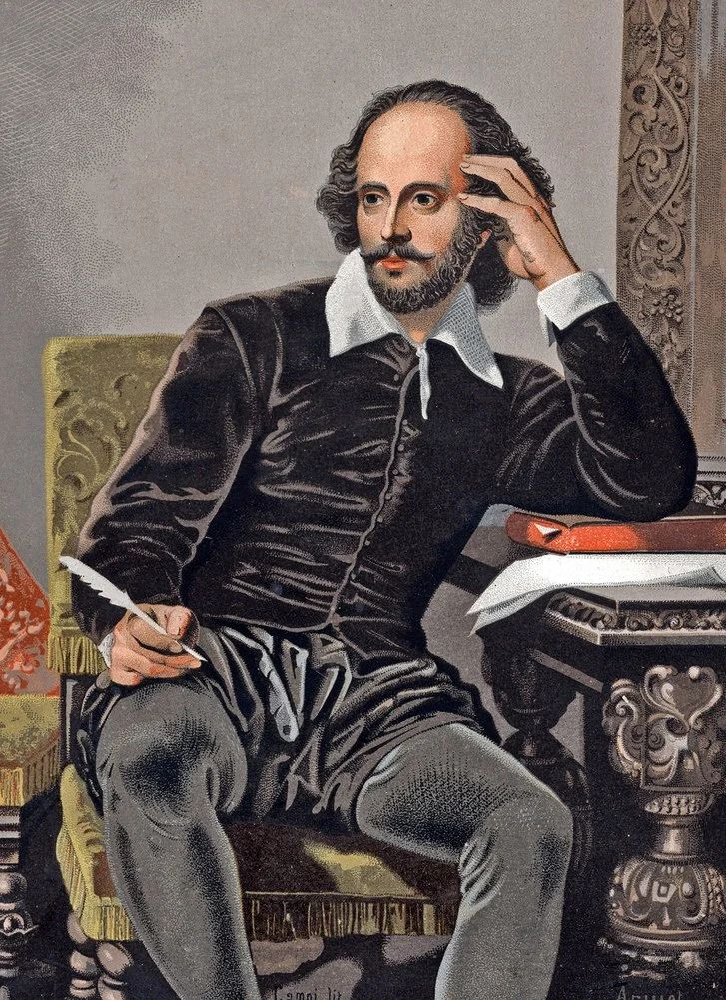

The Bard Of Avon
A literary genius and playwright who redefined storytelling in the English language. Known as the Bard of Avon, he crafted enduring works that delve into themes of love, power, ambition, and betrayal.
About William Shakespeare
>William Shakespeare, an English poet, playwright, and actor of the Renaissance era, was a prominent member of the King’s Men theatrical company from around 1594. He is celebrated for his extensive body of work, which includes at least 37 plays, 154 sonnets, and 2 narrative poems. Shakespeare's writings explore a wide range of human emotions and conflicts, earning global acclaim for over 400 years. Though details of his personal life are limited, it is widely believed he was born and died on the same date, April 23, 52 years apartWilliam Shakespeare's 154 sonnets, first published as a collection in 1609, are among his most famous works of poetry. These sonnets were likely written in the 1590s and are broadly divided into two groups based on their subjects: the Fair Youth sonnets (the first 126) and the Dark Lady sonnets (the last 28). The Fair Youth sonnets address an aristocratic young man, while the Dark Lady sonnets describe a mysterious and complex woman. The identities of these figures remain a topic of speculation and scholarly debate to this day.
Background
William Shakespeare, believed to have been born on or near April 23, 1564, was baptized at Holy Trinity Church in Stratford-upon-Avon on April 26, 1564. Stratford-upon-Avon, located about 100 miles northwest of London, was a thriving market town during Shakespeare's time.Shakespeare was the third child of John Shakespeare, a glove-maker and leather merchant, and Mary Arden, a local heiress. John held positions like alderman and bailiff (similar to a mayor) but faced financial difficulties in the late 1570s. His fortunes eventually improved, and he was granted a coat of arms in 1596, officially making the family gentlemen.The Shakespeares had eight children, but three died in childhood. William was the eldest surviving child after his sisters, Joan and Margaret, died in infancy. He had three younger brothers—Gilbert, Richard, and Edmund—and two younger sisters, Joan and Anne. Anne passed away at age 7, while Joan was the only sibling to outlive William.
Achievements
Integral Role in Lord Chamberlain’s Men (King’s Men)
Joined in 1594 and helped it become the most significant acting company of its time. Contributed as an actor, playwright, and shareholder, playing a vital part in the company’s popularity and success.
Playing writing Legacy
Authored 37 plays over two decades (1590-1613), spanning themes of history, tragedy, and comedy.Innovated dramatic conventions by blending traditional styles with his freer, unique approach, particularly through his use of blank verse (unrhymed iambic pentameter).
The Globe Theater
Co-built the famous Globe Theater in 1599, which became a landmark for performing arts and a financial success.Julius Caesar was its first production.Though the theater burned down in 1613 and was demolished in 1644, it was later reconstructed in 1997 as a tribute to Shakespeare’s contributions.
Cultural and Financial Success
Co-built the famous Globe Theater in 1599, which became a landmark for performing arts and a financial success.Julius Caesar was its first production.Though the theater burned down in 1613 and was demolished in 1644, it was later reconstructed in 1997 as a tribute to Shakespeare’s contributions.
Facts
William Shakespeare was not only the author of around 38 plays, but he also wrote around 150 sonnets.
- Shakespeare married a woman eight years older than him.
- He inevnted around 1700 new words.
- He was the co-wner of the Globe Theater.